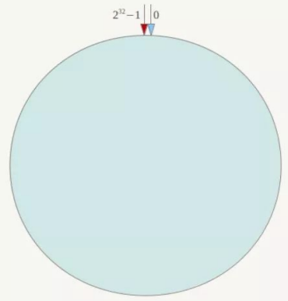

大数据存储技术八股文
大数据存储技术八股文
整理：csjh spxzx
前言：在老杨的基础之上，增添了些辅助理解的内容。重新绘制了一些图片，使它看起来更简洁易懂。删除了部分内容，redis的代码等，使文章读起来没那么硬核，降低学习门槛，让读者拥有60分飘过水平即可。

CAP理论
CAP理论是分布式系统的理论基础。
- 一致性Consistency：在分布式系统中的所有数据备份，在同一时刻是否有同样的值
- 可用性Availability：在集群中一部分节点故障后，集群整体是否还能响应客户端的读写请求
- 分区容忍性Partition tolerance：以实际效果而言，分区相当于对通信的时限要求。系统如果不能在一定时限内达成数据一致性，就意味着发生了分区，必须就当前操作在C和A之间做出选择
高可用、数据一致是很多系统设计的目标，但是分区又是不可避免地事情，由此引出了以下几种选择：
CA without P
不要求P，则C(强一致性)和A是可以保证的。（但分区始终是存在的，CA的系统更多是允许分区后各子系统依然保持CA）
典型放弃分区容忍性的例子有 关系型数据库、LDAP 等

CP without A
不要求A，相当于每个请求都需要在Server之间强一致，而P(分区)会导致同步时间无限延长，如此CP也是可以保证的。
很多传统的数据库分布式事务都属于这种模式，分布式锁也属于这种情况，如下图示：

AP without C
需放弃一致性。一旦分区发生，节点之间可能会失去联系，为了高可用，每个节点只能用本地数据提供服务，而这样会导致全局数据的不一致性。
现在众多NoSQL都属于这类，如下图示：

Raft算法的三个子问题
在写这个问题之前，要先明白Raft是用来做什么的。
上文提到，CAP理论代表了分布式系统的理论基础。理论有了，用什么来实现理论呢。这就是Raft要解决的问题。
Raft主要针对的是，分布式系统中，多个节点之间就某个值达成一致的通信协议。也就是说，Raft是面向Consistency问题的解决方案。
Raft将一致性算法分成了几个关键模块（子问题）：
- 领导人选举
- 日志复制
- 安全性
为了实现一致性这个目标，Raft算法执行的这个过程就和选举一样，参选者需要说服大多数选民（服务器）投票给他，一旦选定后就跟随其操作，领导人说啥，下面的人就做啥。
其实期末复习只需要知道这些就可以了，但是Raft的算法真的很有趣，我真的很想继续写下去。所以下面的内容可以选择性看一看。
Raft算法的选举过程
- 任何一个服务器都可以成为一个候选者，它向其他服务器（选民）发出要求选举自己的请求。
- 其他服务器同意了，回复OK（同意）指令。此时如果有一个Follower服务器宕机，没有接收到选举的请求，则只要达到半数以上的票数，候选人还是可以成为领导者的
- 这样，这个候选者就成为领导者，他可以向选民们发出要执行具体操作动作的指令，比如日志复制。
- 如果一旦这个Leader宕机崩溃了，那么Follower中会有一个成为候选者，发起选举，相当于在执行1~2这个步骤。

Nginx的负载均衡策略
在揭秘Nginx的负载均衡策略之前，我们要知道什么是Nginx呢？Nginx又有什么作用呢？
在探寻这些问题的答案之前，我们首先要知道什么是分布式系统的设计策略！
分布式系统设计策略
分布式系统本质是通过低廉的硬件攒在一起以获得更好的吞吐量、性能以及可用性等。一台设备坏了，可以通过负载均衡和路由到其他设备上。分布式系统有一些通用的设计策略，首先要解决心跳问题（Heartbeat）。一台服务器判定存活状态，才能执行任务，否则则不能。在分布式环境下，有几个问题是普遍关心的，我们称之为设计策略：
- 如何检测你还活着？
- 如何保障高可用性？
- 容错处理
- 重试机制
- 负载均衡
如何检测你还活着？— 《心跳检测》
在分布式环境中,存在着非常多的node，其实质是这些节点分担任务的运行、计算或者程序逻辑处理。那么就有一个非常重要的问题，如何检测一个节点出现了故障乃至无法工作了？
传统解决这一命题是采用心跳检测的手段，如同通过仪器对病人进行一些检测诊断一样。心跳，就是以固定的频率向其他节点汇报当前节点状态的方式。收到心跳，一般可以认为一个节点和现在的网络是良好的。
心跳汇报时，一般会携带附加状态、元数据信息等，便于管理。

若Sever没有收到Node3的心跳时，Server认为Node3失联。
但是失联只是Node3失去联系，不代表Node3存在故障，有可能是Node3处于繁忙状态，导致调用检测超时，也有可能Server与Node3直接出现网络闪断或者链路故障。
因此，心跳不是万能的。收到心跳可以确认正常，但是收不到心跳，不能认定该节点已经死亡。这时候，可以通过一些方法帮助Server做决定：
周期性心跳检测机制、累计失效检测机制。
- 周期性心跳检测机制
Server每隔t秒向Node集群发送检测请求，设定超时时间，如果超过超时时间，则判断死亡，可以把该节点踢出集群。
如何保障高可用性？—《高可用性设计》
系统高可用性的常用设计模式包括三种：
- 主备模式
主备模式就是，当主机宕机时，备机接管主机的一切工作，待主机恢复正常后，按使用者习惯以自动（热备）或手动（冷备）方式将服务切换到主机上运行。在数据库部分，习惯称之为MS模式。MS模式即Master/Slave模式，这在数据库高可用性方案中比较常用。
- 互备模式
互备模式是指两台主机同时运行各自的服务且相互监督情况。在数据库高可用性部分，常用的互备模式是MM模式。MM模式即Multi-Master模式，指一个系统存在多个master，每个master都具有read-write能力，需根据时间戳或业务逻辑合并版本。
比如分布式版本管理系统git可以理解成Multi-master，具备最终一致性。
- 集群模式
集群模式是指有多个节点在运行，同时可以通过主控节点分担服务请求，比如zookeeper。集群模式要特别解决主控节点本身的高可用问题。
TFS集群就是最好的集群模式例子：

容错处理怎么做？—《容错性》
容错性顾名思义就是IT系统对于错误的包容能力，这里的容错确切的说是容纳故障，而非容纳错误。
以前文提到的TFS集群为例，TFS集群需要容错（一个集群宕掉咋办？）、NameServer需要容错、DataServer需要容错。NameServer的容错机制是通过主备切换完成的。NameServer主要管理了DataServer和Block之间的关系。如每个DataServer用有哪些Block，每个Block存放在拿些DataServer上等。同时,NameServer采用了HA结构，一主一备，主NameServer上的操作会重放至备NameServer上。如果主NameServer出现问题，可以实时切换到备NameServer。
另外NameServer和DataServer之间也会有定时的heartbeat，DataServer会把自己拥有的Block发送给NameServer。NameServer会根据这些信息重新构建DataServer和Block的关系。
容错处理是保障分布式系统环境下系统的高可用性，一个典型的案例就是对于缓存实现雪崩问题的解决方案。这里就涉及到了缓存穿透、缓存击穿和缓存雪崩三大问题，也是期中考试要考的内容。
所以我们知道，容错处理的目的是为了保障分布式系统的高可用性，其中对于缓存穿透、缓存击穿、缓存雪崩的处理便属于容错处理。我们会在分布式系统设计策略这一节写完之后，阐述这三个缓存问题是什么以及解决方案。
负载均衡是什么？—《负载均衡》
负载均衡集群：其关键在于使用多台集群服务器共同分担计算任务，把网络请求及计算分配到集群可用的服务器上去，从而达到可用性及较好的用户操作体验。

负载均衡有硬件解决方案，也有软件解决方案。硬件解决方案有著名的F5、软件有LVS、HAproxy、Nginx等。由此我们引出了什么是Nginx。
Nginx-负载均衡的软件解决方案
Nginx的作用是解决负载均衡问题，它实现负载均衡有如下几种策略：
- 轮询：即Round Robin，根据Nginx配置文件中的顺序，依次把客户端Web请求分发到不同的后端服务器
- 最少连接：当前谁的连接最少，分发给谁
- IP地址哈希：确定相同IP请求可以转发给同一个后端节点处理、以方便session保持
- 基于权重的负载均衡：配置Nginx把请求更多地分发到高配置的后端服务器上，包相对较少的请求分发到低配服务器。
在这里我们提到了IP地址哈希，这也是期中考试的考点，我们会在Nginx负载均衡这一小结结束之后，详细阐述。
缓存击穿、缓存穿透与缓存雪崩是什么？怎么解决？
缓存击穿
- 缓存里没有key，数据库里有数据
- 某一个key失效，通常是热点数据，导致高并发情况下，请求直接打到DB上，DB直接崩掉（若是大量的key同时失效则变成了缓存雪崩）
- 解决方法：在查询第一个数据请求上使用一个互斥锁来锁住它。其他线程走到这一步拿不到锁就等着，等到第一个线程查询到了数据，然后做缓存。后面的线程进来发现已经有缓存了，就直接走缓存。
缓存穿透
- 缓存里没有数据
- 大量不存在的id去查询数据，会产生大量的请求到DB查询，可能会导致DB由于压力过大而宕机
- 解决办法：
- 对null缓存：如果一个查询结果返回为空（不管数据是否存在），我们仍把这个空结果（null）进行缓存，设置空结果的过期时间会很短，最长不超过五分钟。
- Bloom Filter：在缓存之前再加一层Bloom Filter，在查询的时候先去Bloom Filter去查询key是否存在，如果不存在就直接返回，存在再走缓存->查DB
- 解决办法：
缓存雪崩
- key对应的数据存在，但在redis中过期，此时若有大量的并发请求过来，这些请求发现缓存过期一般都会从DB加载数据并返回缓存，此时若有大并发的请求可能会瞬间把后端DB压垮。
- 解决方法：
- 构建多级缓存：nginx缓存+redis缓存+其他缓存（ehcache等）
- 将缓存失效时间分散开 ：比如我们可以在原有的失效时间基础上增加一个随机值，比如1-5分钟，这样每一个缓存的过期时间的重复率就会降低，就很难引发集体失效的事件
- 互斥锁：
- 在第一个请求去查询数据库的时候对他加一个互斥锁，其余查询的请求就会被阻塞住，直到锁被释放，从而保护数据库。
- 解决方法：
一致性算法
一致性哈希算法是在1997年由MIT提出的一种分布式哈希（DHT）实现算法。主要解决单调性（Monotonicity）和分散性（Spread）的问题。单调性简单描述是哈希的结果能够保证原有已分配的内容可以被映射到原有缓冲中去，避免在节点增减过程中导致不能命中
一致性Hash
一致性Hash算法将整个哈希值空间组织成一个虚拟的圆环，如假设某哈希函数H的值空间为0-2^32-1（即哈希值是一个32位无符号整型），整个哈希环如下所示

学过数据结构-查询-散列表这一章应该知道什么是Hash，这里不多赘述，简而言之就是将IP地址通过Hash函数直接转变成存储地址。
将数据key使用相同的函数Hash计算出哈希值，并确定此数据在环上的位置，从此位置沿环顺时针”行走“，遇到的第一台服务器就是其应该定位到的服务器。
增、减（宕机）结点后，原本 Node C 拥有的缓存数据需要”托付“给 Node C 的顺时针前驱节点Node E或后继节点Node D。如图所示：
| 操作前 | 操作后 |
|---|---|
 |
 |
|
 |
Hash环的数据倾斜问题
一致性Hash算法在服务节点台少时，容易因为节点分布不均匀而造成数据倾斜（被缓存的对象大部分集中缓存在某一台服务器上）问题，例如系统中只有两台服务器，其环分布如图所示：

- 具体做法可以在服务器IP或主机名的后面增加编号来实现。
- 为每台服务器计算三个虚拟节点，于是可以分别计算”Node A#1“、”Node A#2“、”Node
A#3“、”Node B#1“、”Node B#2“、”Node B#3“的哈希值，于是形成六个虚拟节点。 - 这样就解决了服务节点少时数据倾斜的问题。在实际应用中，通常将虚拟节点数设置为32甚
至更大，因此即使很少的服务节点也能做到相对均匀的数据分布。
- 为每台服务器计算三个虚拟节点，于是可以分别计算”Node A#1“、”Node A#2“、”Node

Redis
这一块内容较多，也是大数据存储技术中最重要的章节。
我们分为几个部分来进行梳理和复习：
- Redis的数据结构
- Redis的持久化方式
- Redis的内存回收算法
- Redis的节点通信协议
- Redis的优化
在进行学习之前，我们必须要知道什么是Redis，它是用来解决什么问题的？
在Web应用发展的初期，那时关系型数据库受到了较为广泛的关注和应用，原因是因为那时候Web站点基本上访问和并发不高、交互也较少。而在后来，随着访问量的提升，使用关系型数据库的Web站点多多少少都开始在性能上出现了一些瓶颈，而瓶颈的源头一般是在磁盘的I/O上。而随着互联网技术的进一步发展，各种类型的应用层出不穷，这导致在当今云计算、大数据盛行的时代，对性能有了更多的需求，主要体现在以下四个方面：
- 低延迟的读写速度：应用快速地反应能极大地提升用户的满意度
- 支撑海量的数据和流量：对于搜索这样大型应用而言，需要利用PB级别的数据和能应对百万级的流量
- 大规模集群的管理：系统管理员希望分布式应用能更简单的部署和管理
- 庞大运营成本的考量：IT部门希望在硬件成本、软件成本和人力成本能够有大幅度地降低
为了克服这一问题，NoSQL应运而生，它同时具备了高性能、可扩展性强、高可用等优点，受到广泛开发人员和仓库管理人员的青睐。
Redis是现在最受欢迎的NoSQL数据库之一
余下的内容，请参考老杨的文档。这里笔者还未做整理。
关系型数据库和非关系型数据库的优缺点分析
- 关系型数据库：
- 优点：
- 容易理解
- 易于维护
- 使用方便
- 能完成一些复杂操作
- 缺点：
- 读写性差
- 灵活性欠缺
- 硬盘I/O有瓶颈
- 海量数据读写能力差
- 优点：
- 非关系型数据库：
- 优点：
- 读写性能高
- 格式灵活
- 速度快
- 高拓展性
- 成本低，部署简单
- 缺点：
- 不提供SQL支持，学习成本和使用成本高
- 无事务处理
- 数据结构相对复杂，复杂查询方面稍微欠缺
- 优点：
设计一个缓存框架（代码来源：spxzx）
采用LRU策略：
1 | |